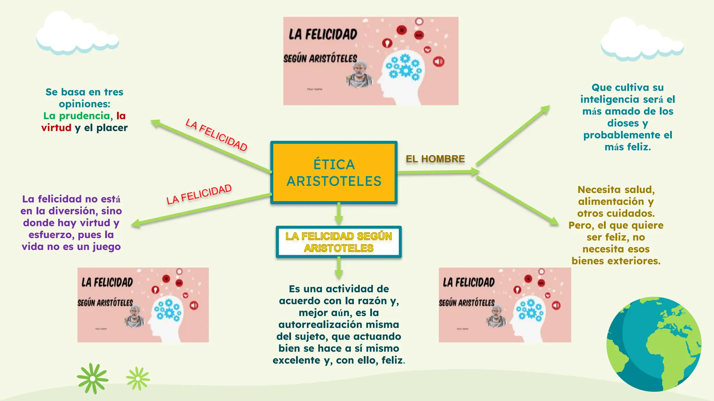

🎨 Curso de Arte:Exploración Visual y Creatividad Contemporánea
Objetivo del curso
Desarrollar la capacidad de análisis visual y expresión creativa a través de técnicas artísticas modernas y enfoques conceptuales scontemporáneos.
Contenido del curso
listado de temas del curso.- Tema Historia breve del arte contemporáneo
- Tema Fundamentos de composición y color.
- Tema Técnicas mixtas: collage, pintura acrílica, ilustración digital
- Tema Arte conceptual y expresión simbólica

MoMA Learning - Arte Moderno y Contemporáneo:
Khan Academy - Historia del Art
📚 Curso de Filosofía: Introducción al Pensamiento Crítico y Ético
Objetivo del curso
Comprender las bases del pensamiento filosófico, desarrollar habilidades de razonamiento lógico y aplicar conceptos éticos a problemas actuales.
Contenido del curso
listado de temas del curso.- Tema ¿Qué es la filosofía?
- Tema Lógica y argumentación
- Tema Ética clásica: Aristóteles, Kant, Mill
- Tema Filosofía del conocimiento

Stanford Encyclopedia of Philosophy (SEP):o:
Internet Encyclopedia of Philosophy (IEP):
💻 Curso de Tecnología: Fundamentos de Innovación Digital e Inteligencia Artificial
Objetivo del curso
Introducir al estudiante a conceptos clave de tecnología moderna, programación básica y aplicaciones prácticas de la inteligencia artificial en distintos sectores.
Contenido del curso
listado de temas del curso.- Tema Conceptos esenciales de tecnología digital
- Tema Programación básica (Python)
- Tema Introducción al aprendizaje automático
- Tema Herramientas digitales y automatización

MIT OpenCourseWare - Computer Science:
Google AI - Recursos educativos: